|
11:00
Registrazione presso il Dipartimento Interateneo di Fisica "M. Merlin"
|
|
13:30
Apertura della Conferenza in Aula A; intervengono:
|
|
14:00
AISF: CHI SIAMO
|
|
15:30
Sessione di Visita dei laboratori
|
|
17:30
Coffee Break
|
|
18:00
Sessioni Parallele nelle aule A, B, C
|
|
20:30
Cena presso il Dipartimento
|
|
9:30
Sessione di Visita dei Laboratori
|
|
11:00
Coffee Break
|
|
11:30
Sessione di Visita dei Laboratori
|
|
9:00
Sessione Plenaria (Invited Talks)
|
|
10:30
Coffee Break
|
|
11:00
Assemblea Generale Annuale
|
|
14:00
Pranzo in Dipartimento
|
|
15:00
|
|
17:00
Coffee break
|
|
18:30
Poster Session in Dipartimento
|
|
20:00
Cena Sociale presso il ristorante Urban
|
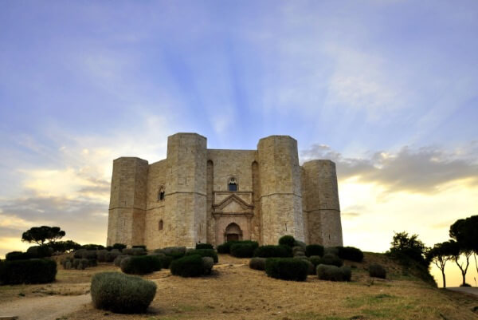
Per la giornata extra vorremmo portarti in uno dei posti caratteristici di Bari e in generale della Puglia (mare, Alberobello, Castel del Monte o Grotte di Castellana).Un ringraziamento da parte di tutto il Comitato Organizzatore a chi ci ha permesso di realizzare la terza edizione della conferenza fornendoci ogni tipo di supporto necessario. Un ringraziamento speciale va al Prof. Mauro De Palma, al Prof. Domenico Di Bari e al Prof. Salvatore Nuzzo, per aver creduto nel nostro progetto e per il contributo e la collaborazione che ci hanno offerto per l'organizzazione di CISF 2017.
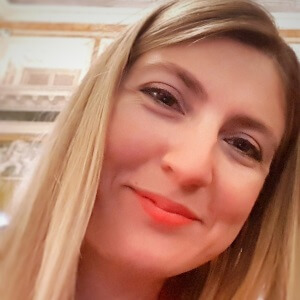
Elisabetta Bissaldi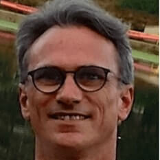
Maurizio Dabbicco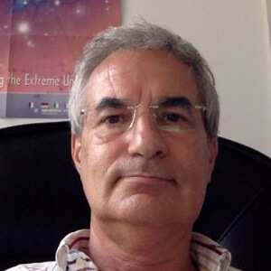
Nicola Giglietto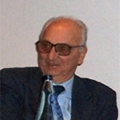
Luciano Guerriero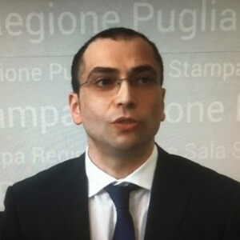
Marco Pappagallo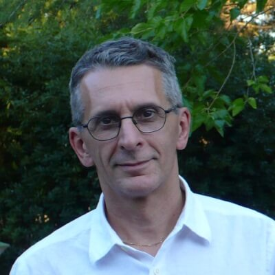
Saverio Pascazio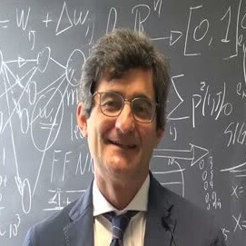
Roberto Bellotti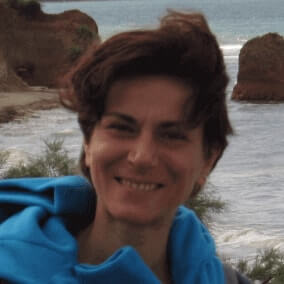
Milena D'Angelo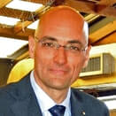
Gaetano Scamarcio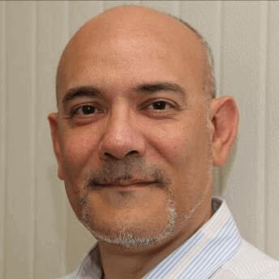
Vincenzo SpagnoloI vari ambiti della ricerca condotta presso il Dipartimento Interateneo di Fisica di Bari saranno presentati da professori e ricercatori, che svolgeranno seminari sulle tematiche più innovative ed interessanti di diversi settori. Si spazierà dalla Fisica Teorica alle connessioni interdisciplinari e dalla Fisica della Materia a quella Particellare ed Astroparticellare, in una serie di incontri da non perdere.
Tutti gli iscritti sono invitati a farsi avanti con il proprio seminario durante la sessione parallela. Non perdete quest’occasione di mettervi in gioco e di presentare ai soci AISF gli argomenti che più vi appassionano.
La novità di questa edizione consiste nella possibilità, per ciascun partecipante, di esporre al pubblico un poster che illustri un proprio lavoro, quale può essere una particolare ricerca o una tesi, o ancora un’esperienza di laboratorio.
Svolge attività di ricerca nell’ambito della fotonica, dell’optoelettronica e della sensoristica, con particolare attenzione allo studio di nuovi fenomeni fisici ed alle applicazioni tecnologiche di dispositivi basati su nanotecnologie. In particolare, laser a cascata quantica, emettitori infrarossi e terahertz a semiconduttore, sistemi spettroscopici a microsonda, microscopia in campo prossimo, sensori a transistor organici biofunzionalizzati. E’ autore di più di 236 pubblicazioni (ISI) ed è co-inventore di 7 brevetti, fra cui quello del laser a cascata quantica a super-reticolo.
Gaetano Scamarcio ha conseguito il dottorato di ricerca in Fisica nel 1989 e dal 2002 è professore ordinario di Fisica sperimentale presso l’Università degli Studi di Bari "Aldo Moro". Dal 2005 è responsabile della Unità di Bari dell’Istituto di Fotonica e Nanotecnologie del CNR. E’ coordinatore del dottorato di ricerca in Fisica (cicli 26°-30°). E’ stato ricercatore presso il Max-Planck-Institut per la Fisica dello Stato Solido di Stoccarda (1989-1990); visiting scientist presso i Bell Laboratories dell’AT&T, poi Lucent Technologies, Murray Hill, NJ, USA (1994-96, 2000, 2001); guest scientist presso il Walter-Schottky-Institut di Monaco (1991) e professore invitato presso l’Università di Parigi 7 (2006). E’ stato presidente del Distretto Tecnologico per la Meccatronica MEDIS (2011-14) e componente del CdA dalla fondazione (2007-11). E’ stato componente dell'Organismo di coordinamento e gestione del Cluster Tecnologico Nazionale "Fabbrica Intelligente" (2012-14). Ha organizzato e presieduto diverse conferenze e scuole internazionali, fra cui: 70° Course: Terahertz Science, Nanotechnologies and Applications - International School of Solid State Physics, Erice (2016); 100th National Congress of the Italian Physical Society (Applied Physics Section, 2014); 11th International Conference on Intersubband Transitions in Quantum Wells (ITQW-2011); 2nd International Workshop on Quantum Cascade Lasers (2006). E’ stato insignito del Premio di Operosità Scientifica della Società italiana di Fisica nel 1989.
Ha svolto attività di ricerca nel campo dell’elettronica quantistica e tecnologia laser. I risultati scientifici più rilevanti riguardano le proprietà ottiche e termiche di laser a semiconduttori e, specie negli ultimi anni, la realizzazione di sensori ottici per la rivelazione di tracce gassose basati su spettroscopia fotoacustica. La sua produzione scientifica ammonta ad oltre 150 pubblicazioni e due capitoli di libro (> 1800 citazioni, h-index=23). Ha tenuto più di 40 tra relazioni su invito, keynote e sessioni plenarie a congressi internazionali ed è co-autore di due brevetti depositati.
Vincenzo Spagnolo ha conseguito la laurea in Fisica con lode nel 1991 ed il dottorato di ricerca in fisica nel 1995, entrambi presso il dipartimento di fisica dell’Università degli studi di Bari. Nel 2004 è stato assunto come ricercatore universitario presso il Politecnico di Bari e nel 2015 è divenuto professore Associato presso lo stesso ateneo. E’ stato responsabile di diversi progetti di ricerca e di formazione. E’ stato visiting researcher presso la Rice University di Houston nel periodo 2009-2011. E’ senior member della SPIE, società internazionale di ottica e fotonica. E’ editor delle riviste internazionali Journal of Sensors (Hindawi) e Applied Sciences (MPDI).
Svolge attività di ricerca nel campo dell’imaging quantistico.
Milena D'Angelo si è laureata in Fisica presso l’Università di Bari nel 1999. Nel 2004 ha ottenuto il dottorato in Fisica dall’University of Maryland Baltimore County (Baltimore, MD-USA), dopo ha lavorato nel laboratorio di ottica quantistica del prof. Yanhua Shih, dando importanti contributi alla nascita dell’imaging quantistico. Nel 2005-06 ha lavorato come borsista Marie Curie presso il Laboratorio Europeo di Spettroscopia Nonlineare (LENS) di Firenze. Attualmente è ricercatrice in Fisica presso l’Università di Bari, dove ha recentemente avviato un nuovo laboratorio dedicato all’immagine e alle tecnologie quantistiche.
I suoi interessi di ricerca comprendono ottica non lineare nei semiconduttori e ottica quantistica, lo sviluppo di nuove tecniche ottiche per la caratterizzazione dei materiali optoelettronici, applicazioni dell'optical feedback interferometry. E' stato coautore di circa 80 pubblicazioni e 5 richieste di brevetto.
Maurizio Dabbicco ha ottenuto la laurea (1989) e il dottorato (1993) in Fisica dall'Università di Bari. Nel 1994-1995 è stato research assistant presso il laboratorio Clarendon, Università di Oxford, UK. Nel 1996 è entrato a far parte del dipartimento di Fisica presso l'Università di Bari ed è diventato professore di fisica sperimentale nel 2005. Dal 2015 è coordinatore del corso di laurea in Scienza dei Materiali presso l'Università di Bari. Attualmente è referee di alcune riviste di ottica e valutatore di progetti del Ministero dell'Istruzione (MIUR). La sua attività professionale comprende l'organizzazione di due workshop internazionali, la coordinazione come chief investigator di alcuni progetti nazionali ed internazionali anche in collaborazione con industrie di spicco. È membro associato dell'Istituto di Fotonica e Nanotecnologie del Consiglio Nazionele delle Ricerche (CNR).
La sua attività scientifica comprende: Meccanica Quantistica, Entanglement, Decoerenza, Informazione Quantistica, Teoria dei Campi, Meccanica Statistica, Complessità, Comportamento Temporale dei Sistemi Quantistici, Irreversibilità e Fluttuazioni Statistiche, Transizioni di Fase, Fisica dei Neutroni, Fisica Atomica e Molecolare, Ottica Quantistica. E' stato autore di circa 200 articoli di ricerca e 2 libri.
Saverio Pascazio si è laureato in Fisica all'Università di Bari. Ha ottenuto un postdoc presso la Free University of Brussels, Belgio e presso la Waseda University, Tokyo, Giappone. Attualmente è professore di Fisica Teorica presso l'Università di Bari. E' stato “Guest Professor”, Waseda University, Tokyo, Giappone (1991-2016); “Gastprofessor”, University of Innsbruck, Austria (1995); “Invited Professor”, Technical University, Praga, Repubblica Ceca (2010); “Invited Professor”, Imperial College, Londra, Regno Unito (2013); “Invited Professor”, Sharif University, Tehran, Iran (2014); “Invited Professor”, SISSA, Trieste, Italia (2015). E' editore di 5 riviste internazionali di Fisica; "Referee" per circa 30 riviste internazionali di Fisica; "Panelist" per l'Unione Europea; "Section Chair" per il Natural Sciences and Engineering Research Council (NSERC) Canadese; "General Chair" della Optical Society of America (OSA); "Referee" per Università, Enti di Ricerca e Ministeri in Italia, Austria, Francia, Gran Bretagna, Irlanda, Israele, Repubblica Ceca, Sud Africa, Canada e Stati Uniti.
Attualmente collabora allo sviluppo di nuovi strumenti di analisi di immagini ottiche e radar da satellite per lo studio di fenomeni planetari ed applicazioni al monitoraggio ambientale.
Luciano Guerriero si è laureato in Fisica nel 1952 presso l’Università di Padova, dal 1967 ha ricoperto cattedra di Fisica Generale dell’Università di Bari e poi quella del Politecnico di Bari. Dal 2005 è Professore Emerito. Dal 1952 al 1988 ha svolto ricerche nel campo della Fisica Subnucleare delle alte energie nel Laboratorio per Raggi Cosmici dell’Università di Padova, sulla Marmolada, e poi presso il Massachussets Institute of Technology (MIT) e presso gli acceleratori nei laboratori di Brookhaven (New York) e del Fermilab a Batavia (Illinois) ha sviluppato vari rivelatori a traccia per la determinazione dei numeri quantici di nuove particelle e risonanze. E’ stato per più mandati direttore del dipartimento di Fisica ed ha ricoperto vari incarichi alla direzione di strutture scientifiche e di ricerca nazionali quali l’INFN, come Vice Presidente, ed il CNR, come direttore dell’Istituto per l’Elaborazione di Segnali e Immagini a Bari e Commissario Straordinario del Centro Nazionale Universitario per il Calcolo Elettronico (CNUCE) a Pisa. Dal 1980 al 1993 ha avuto la responsabilità di tutte le attività spaziali italiane. Dal 1980 al 1988 come direttore del Piano Spaziale Nazionale e poi, dal 1988 al 1993, come primo presidente dell’Agenzia Spaziale Italiana. Attualmente è responsabile (CEO) dello Spin-off GAPsrl (Geophysical Applications Processing) del Politecnico di Bari e coordinatore scientifico del Master in Tecnologie del Telerilevamento Spaziale.
I suoi interessi scientifici riguardano l’astrofisica sperimentale e le applicazioni dei metodi di machine learning per l’elaborazione di segnali ed immagini della medicina e dell’economia.
Roberto Bellotti è professore di Fisica dell’Università degli Studi di Bari "Aldo Moro". Con l’apparato sperimentale PAMELA, trasportato nello spazio da un satellite russo, ha partecipato alla scoperta di positroni di altissima energia nei raggi cosmici. Nel settore della medicina conduce ricerca finalizzate allo sviluppo di sistemi di "computer aided detection" per l’analisi quantitativa di immagini acquisite a fini diagnostici nell’ambito di patologie neurologiche e psichiatriche. Dal 2010 è Quantitative Analysist Consultant del Department of Economic and Social Affairs Division for Public Administration and Development Management - United Nations.
Si è occupato dall’inizio della sua attività di ricerca, dei temi di fisica sperimentale riguardanti lo studio dei raggi cosmici e raggi gamma. Ha approfondito e curato le tematiche relative allo sviluppo di rivelatori di particelle da impiegarsi in fisica delle alte energie con rivelatori sotterranei, nello spazio o sulla superficie, occupandosi anche della progettazione e calibrazione su fasci di particelle di rivelatori.
Nicola Giglietto consegue la laurea in FISICA nel 1984 con il massimo dei voti, presso l’Università degli Studi di Bari. Dal 1985 è associato alle attivitè scientifiche dell’Istituto Nazionale di Fisica Nucleare (INFN) quale collaboratore con il gruppo II della sezione INFN di Bari occupandosi di studi di fisica astroparticellare, con particolare attenzione allo studio dei raggi cosmici e alle loro tecniche sperimentali di rivelazione. Nel 1986 è vincitore del concorso INFN per ricercatore di gruppo II presso la sezione di Bari ricoprendone il ruolo dal 2/2/1987 al 31/10/1999 presso la sezione INFN di Bari. Nel 1998 è vincitore del concorso nazionale a professori universitari di ruolo II fascia, settore B01A, fisica sperimentale, ora rinominato FIS/01, bando del 30/1/1996. Ricopre il ruolo di Professore Associato a tempo pieno del Politecnico di Bari dal 1/11/1999, afferendo al Dipartimento Interateneo di Fisica dell’Università di Bari e del Politecnico di Bari. Ha conseguito l’abilitazione nazionale a professore di I fascia nel settore concorsuale 02/A1 valida dal 23/01/2014 al 23/1/2020. Dal novembre 2016 è professore ordinario in Fisica Sperimentale, settore scientifico disciplinare FIS/01, presso il Politecnico di Bari - Dipartimento Interateneo di Fisica.
Ha svolto attività di ricerca nel campo della fisica delle particelle elementari lavorando negli esperimenti BaBar (SLAC) e LHCb (CERN). Esperto di spettroscopia di stati esotici/standard e di analisi dati tramite la tecnica di Dalitz plot, è stato recentemente autore dell'osservazione di 5 nuovi barioni charmati. La sua produzione scientifica conta piu' di 700 pubblicazioni su riviste internazionali.
Marco Pappagallo consegue la laurea (2002) e il titolo di dottore (2006) di ricerca presso l'università degli studi di Bari. Lavora dal 2005 al 2007 presso IPPP (Institute for Particle Physics Phenomenology), presso la Durahm University (UK). Nel 2007-2011 è titolare di un assegno di ricerca presso l'università degli studi di Bari durante il quale ha ottenuto una similfellow presso il CERN. Successivamente (2011-2015) lavora come ricercatore presso la University of Glasgow (UK). Dal 2016 è ricercatore a tempo determinato (RTDA) presso l’Università di Bari come responsabile del progetto di ricerca “Affascinanti asimmetrie” nell’ambito di FutureInResearch finanziato dalla Regione Puglia. È referee di due riviste di settore.
La sua attività di ricerca è incentrata su tematiche attinenti la fisica sperimentale delle interazioni fondamentali con particolare riferimento alla progettazione, costruzione e test di rivelatori ed apparati satellitari e di superficie per fisica astroparticellare. I risultati della attività di ricerca sono stati inoltre presentati in circa 30 conferenze internazionali, di cui 9 in qualità di invited speaker, e hanno portato ad oltre 200 pubblicazioni.
Francesco Giordano si laurea in Fisica con il massimo dei voti (1998) e consegue il titolo di Dottore di Ricerca (2002) presso l'Università degli Studi di Bari, dove vince nel 2002 il concorso per un assegno di ricerca dal titolo "Studio e caratterizzazione spaziale del rivelatore per gamma dell'esperimento GLAST per ottimizzarne le risoluzioni angolari ed energetiche”. Nel periodo 1999-2006 è titolare di una Associazione Scientifica presso l'INFN. A partire dal Luglio 2006 è Titolare di un Incarico di Ricerca presso l'INFN. Dal 2006 è Ricercatore Universitario presso il Dipartimento Interateneo di Fisica "M. Merlin” dell'Università degli Studi di Bari, presso cui nell'Ottobre 2015 prende servizio come Professore Associato. Nel 2013 consegue l'Abilitazione Scientifica Nazionale come professore di Prima Fascia per il Settore Concorsuale 02/A1 (Fisica Sperimentale delle Interazioni Fondamentali). Referee di riviste di settore, ha anche coperto il ruolo di referente UniBa del progetto di ricerca del PON Apulia Space e coordinatore didattico per il progetto di formazione. Attualmente responsabile locale della sigla di esperimento CTA dell’Istituto Nazionale di Fisica Nucleare della Seziona di Bari.
La sua attività di ricerca comprende lo studio di sorgenti transienti extragalattiche (Gamma-Ray Burst) e lo sviluppo di rivelatori al silicio di nuova generazione (SiPM). È membro di collaborazioni internazionali nell’ambito della Fisica astroparticellare, quali Fermi (NASA), CTA (Cherenkov Telescope Array) e HESS (High Energy Stereoscopic System).
Elisabetta Bissaldi ha conseguito la Laurea Specialistica in Astrofisica e Fisica Spaziale presso l’Università degli Studi di Trieste nel 2006 ed ha svolto il Dottorato di Ricerca presso il Max-Planck Institut for Extraterrestrial Physics sul tema Astrofisica delle Alte Energie, conseguendo il titolo di Dottore di Ricerca nel 2010 (Technische Universitaet Muenchen, Monaco di Baviera, Germania). Ha ottenuto un postdoc presso l'Institut for Astro- and Particle Physics di Innsbruck (2010-2013) e presso L'Università degli Studi di Trieste (2013-2015). Nel 2015 è stata ricercatrice presso l'Istituto Nazionale di Fisica Nucleare (INFN) di Bari. Dal 2016 è ricercatrice presso il Politecnico di Bari ed è associata all’INFN.
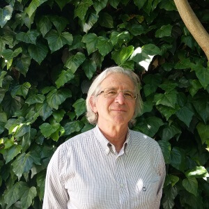
Ha sempre svolto attività di ricerca nell’ambito della fisica sperimentale delle particelle elementari e delle interazioni fondamentali, partecipando, con responsabilità operative e gestionali, a diversi esperimenti presso il CERN in collaborazioni internazionali. Particolare impegno è stato dedicato alla verifica sperimentale del Modello Standard con gli esperimenti ALEPH e CMS, contribuendo anche alla scoperta del bosone di Higgs. Ha inoltre svolto un ruolo importante nel portare in sede la conoscenza e la tecnologia dei rivelatori a silicio, realizzando anche un laboratorio all’avanguardia per la loro caratterizzazione e per la successiva realizzazione di apparati traccianti. È co-autore di circa 800 pubblicazioni (data base WoS, h-index 78) su riviste internazionali ed ha presentato i risultati delle ricerche in numerosi congressi nazionali e internazionali
Mauro De Plama si è laureato in Ottobre 1977, è divenuto Professore Associato nel 1992 e Professore Ordinario (FIS01) presso l’Università degli Studi di Bari nel 2001. A ricoperto diversi incarichi di servizio e responsabilità organizzative per conto del MIUR, dell’Università di Bari e dell’INFN. Attualmente è membro del CMS Career Committee, membro della Commissione per l’Abilitazione Scientifica Nazionale del Settore Concorsuale 02/A1 - Fisica sperimentale delle interazioni fondamentali, e Direttore dalla Sezione INFN di Bari.
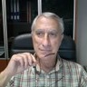
Ha svolto la sua attività di ricerca nell’ambito sperimentale della Fisica delle Particelle Elementari con la partecipazione a numerosi esperimenti agli acceleratori del CERN che hanno avuto, fra i risultati di maggior rilievo, la prima osservazione della produzione e del decadimento del barione Σ+c, la prima osservazione “diretta” di particelle con quark beauty, la determinazione del numero di famiglie di neutrini, la misura precisa delle masse della Z0 e delle W±, la scoperta del Bosone di Higgs. Ha al suo attivo pubblicazioni su riviste internazionali a elevato impatto: 980.
Salvatore Nuzzo si laurea in Fisica presso l’Università degli Studi di Bari. Nel 1987 è diventato Professore Associato di Fisica Generale e nel 2001 Professore Ordinario di Fisica (Fis01). &EGrave;’ stato rappresentante dei Ricercatori Infn, Coordinatore di Gruppo 1 e membro della Commissione scientifica Nazionale 1 INFN, Responsabile Locale di CMS, Referee degli esperimenti ATLAS, L3, e NA48, membro della Giunta di Dipartimento, Coordinatore del Dottorato in Fisica. &EGrave; attualmente Direttore del Dipartimento, Coordinatore del Seminario Nazionale di Fisica Nucleare e Subnucleare di Otranto, membro dell’Accademia Pugliese delle Scienze.
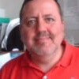
La sua attività di ricerca si è rivolta alla fotorivelazione della radiazione Cherenkov mediante rivelatori RICH e alla definizione ed all’ottimizzazione dei criteri di riconoscimento delle immagini generate dai fotoni della radiazione Cherenkov. Ha partecipato ha più di 20 Conferenze Internazionali con presentazione orale e proceedings. Ha al suo attivo circa 160 pubblicazioni su riviste internazionali referate.
Domenico Di Bari consegue la laurea in Fisica (1989) con voti 110/110 e lode e il dottorato di ricerca (1995) presso l’Università degli Studi di Bari. Nel 1994 vince il concorso pubblico come ricercatore presso l’Università degli Studi di Bari, dove nel 2004 viene assunto in qualità di Professore di II fascia nel settore FIS/01 – Fisica Sperimentale. Dal 2009 è coordinatore del Gruppo III (Fisica Nucleare) dell’Istituto Nazionale di Fisica Nucleare, sezione di Bari. Dal 2010 è responsabile del Tier2-Alice della sezione di Bari. Il prof. Di Bari ha inoltre condotto attività di formazione e divulgazione scientifica, partecipando attivamente sia come promotore sia come relatore o docente guida.
Dott. Marco Pappagallo
Dopo la scoperta di due pentaquark nel 2015, cinque nuovi barioni sono stati osservati nello spettro di massa Xic+ K- . Il loro numero e le loro proprietà, del tutto inaspettate, stanno mettendo a dura prova la nostra conoscenza della cromodinamica quantistica (QCD) a tal punto da fare ipotizzare che qualcuno di essi non sia un barione standard (composto da tre quark) ma bensì un pentaquark.
Prof. Maurizio Dabbicco
I materiali avanzati e le nanotecnologie, insieme alla fotonica, sono tre delle sei Key Enabling Technolgies che il programma H-2020 dell’Unione Europea ha scelto come motore dello sviluppo tecnologico (e scientifico) nel futuro a medio termine dell’Europa. Tra le tante correlazioni esistenti tra queste KET, verranno illustrate quelle più rilevanti per le attività di ricerca in UniBA.
Prof. Nicola Giglietto
Nella presentazione saranno mostrati gli elementi fondamentali per capire la fisica dei raggi
gamma di alta energia e le potenzialità connesse all’uso di telescopi a terra, basati sulla tecnica Cherenkov.
La fisica dei raggi gamma, come delineato dai telescopi su satellite quale l’esperimento FERMI,
permette l’identificazione e la catalogazione di potenti sorgenti di altissime energie quali AGN,
SNR e pulsar. Lo studio alle energie dei fotoni del TeV, possibile solo da Terra con i telescopi
Cherenkov , permette di comprendere meglio i meccanismi di produzione di eventi di alta energia e i meccanismi di propagazione verso di noi ed evidenziare eventuali contributi dovuti ad
esempio alla materia oscura. La rassegna si completa con una descrizione del progetto CTA e del suo programma scientifico.
Prof. Saverio Pascazio
Le onde si propagano in modo molto diverso in 2 ed in 3 dimensioni. In particolare, il principio di Huygens, secondo cui ogni punto di un fronte d’onda è sorgente di onde secondarie, è valido in 3 dimensioni, ma non in 2. Analizzeremo il meccanismo di propagazione delle onde e ne discuteremo le proprietà, soffermandoci su problematiche molto attuali.
Prof. Luciano Guerriero
Cinquant’anni di attività spaziali hanno contribuito in modo essenziale alla conoscenza della dinamica di molti fenomeni che riguardano la dinamica del nostro pianeta. La misura sinottica di molti parametri fisici relativi all’atmosfera, agli oceani ed alle terre emerse permettono lo sviluppo di modelli sempre più accurati di fenomeni globali da cui dipendono l’evoluzione del Clima, le previsioni del riscaldamento globale e la previsione meteo e di altri fenomeni catastrofici. Nel contempo, misure dallo Spazio sempre più continue e dettagliate su scala locale consentono il monitoraggio di fenomeni relativi all’evoluzione del territorio per cause naturali ed antropiche e contribuiscono alla realizzazione di sistemi per il contrasto al degrado ambientale e alla prevenzione di disastri naturali. È evidente la natura tipicamente interdisciplinare delle attività spaziali in cui anche le competenze del laureato in Fisica hanno un ruolo fondamentale.